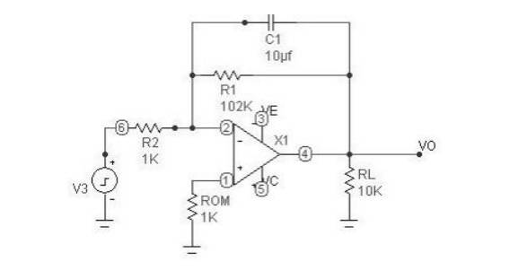
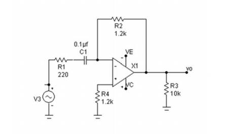
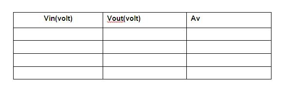
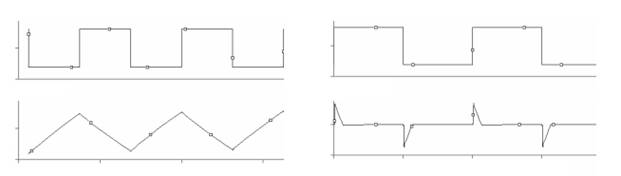

1) Integrator 2) Differentiator
CRO,Function generator,breadboard,ua741 IC, + 12 V supply,
Integrator

Differentiator

.
Integrator
An op-amp integrator simulates mathematical integration which is basically a summing
process that determines the total area under the curve of a function ie., the integrator does integration of the input voltage waveform. Here the input element is resistor and the feedback element is capacitor.
The output can be given by
V0= 1/(RC) ∫Vsdt +Vc(t=0)
Where VC (t=0) is the initial voltage on the capacitor. For proper integration, RC has to be much greater than the time period of the input signal.
Differentiator
An op-amp differentiator simulates mathematical differentiation, which is a process of
determining the instantaneous rate of change of a function. Differentiator performs the reverse of integration function. The output waveform is derivative of the input waveform. Here, the input element is a capacitor and the feedback element is a resistor.
The output voltage is given by
V0= -RC(dVs/dt)
7.1.6 Formulae required , Nature of graph if any : Not applicable
7.1.7 Step by step procedure :
DIFFERENTIATOR
INTEGRATOR:

7.1.9 Specimen calculations:
7.1.10 Plotting of the graph:
Integrator Differentiator

7.1.11 Discussion of results and conclusion: